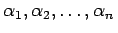

Inhalt Index DeskTop Bronstein

 Integraltransformationen Laplace-Transformation Lösung von Differentialgleichungen mit Hilfe der Laplace-Transformation Gewöhnliche Differentialgleichungen mit konstanten Koeffizienten
Integraltransformationen Laplace-Transformation Lösung von Differentialgleichungen mit Hilfe der Laplace-Transformation Gewöhnliche Differentialgleichungen mit konstanten Koeffizienten


Die charakteristische Gleichung G(p)=0 dieser Differentialgleichung habe nur einfache Wurzeln , von denen keine gleich Null ist. Für die Störfunktion f(t) können zwei Fälle betrachtet werden.